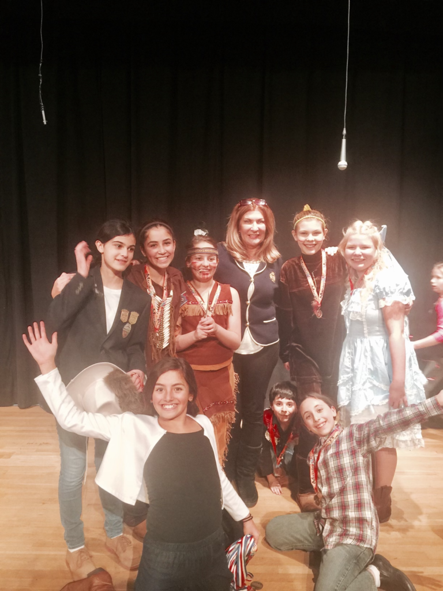

We believe in...
The Power of Creativity!
| Established in 2002, Music and Art Academy is a professional school for students of all ages and abilities. We offer an excellent selection of classes including: piano, guitar, voice, acting and visual arts, taught by our knowledgeable and dedicated staff of Teaching Artists. Studying at the Academy provides a unique opportunity for musical and artistic growth in a fun and encouraging atmosphere. | ||
|
 |
We Prepare our students for the future! | |
| Our goal is to promote quality teaching and quality learning in a highly professional environment. Our faculty seeks to help students achieve their utmost musical and artistic potential as well as prepare them for musical colleges and universities. Recitals, competitions, festivals and art exhibitions take place frequently. The Music and Art Academy is a proud member of the Music Teacher National Association. | ||
Recitals - Festivals & Art Exhibitions
Our students are able to present their artwork on a regular basis through a series of Recitals, Festivals and Art Exhibitions at the school and in the surrounding towns and counties. We are proud to prepare our students for the Royal School of Music Examinations. The UK’s larges music education body and one of the largest publishers in the world The worlds leading provider of music exams.
We are proud to prepare our students for the Royal School of Music Examinations. The UK’s larges music education body and one of the largest publishers in the world The worlds leading provider of music exams.We Provide Performance Opportunities!
There is no way to become an excellent performer unless you actually get up in front of an audience and perform! We provide our students with a wide range of performance opportunities from recitals, to concerts, to opening for the world famous ROCKETTES and on Radio City Music Hall stage!